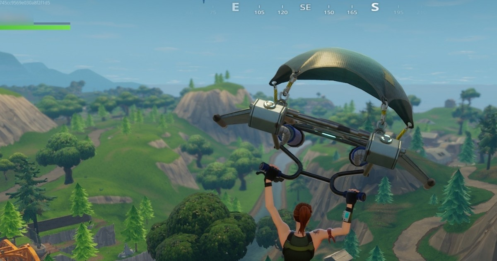

Fortnite é um famoso jogo de tiro do tipo Battle Royale, ou seja, todos contra todos onde o último sobrevivente é o vencedor. O game tem versões para PC, PS4, Xbox One, Nintendo Switch, iOS e Android. Assim, como outros títulos do gênero, é necessário dominar uma série de estratégias para ficar vivo por mais tempo.
Sua primeira missão no jogo é conseguir armas, escudos e itens para sua sobrevivência, e rápido! São 100 jogadores, ao mesmo tempo, num mesmo mapa também fazendo de tudo para se manter vivo. O tempo para conseguir recursos é crucial e jogará contra, se você demorar demais.
1. Aterrissar em locais com construções são ótimos para se conseguir equipamento mais rápido, mas como dito antes, vários outros jogadores pensam o mesmo. O resultado isso é alguns se armando mais rápido e já eliminado os retardatários.
2. Sempre que der, procure aterrissar em telhados. Alguns prédios e casas têm armas por lá ou você pode encontrá-las em baús escondidos embaixo das telhas (não faz muito sentido, mas abstraia essa parte). Use sua picareta para “minerar” o telhado.
3. Tenha em mente o seguinte: um alvo em constante movimento é bem mais difícil de acertar que um parado no lugar. Mesmo se você estiver recarregando sua arma, se curando ou pensando no que fazer, nunca pare de se mover.
4. Um dos aspectos únicos de Fortnite é a possibilidade de construção. E isso é algo muito importante a se considerar, especialmente mais para o final da partida. Você precisa aprender a construir e bem (procure locais mais afastados para praticar). Mas antes de sair criando rampas, paredes e pequenas fortalezas, você precisa conseguir matéria-prima. Use sua picareta e vá atrás de pilhas de madeira, próximas às construções, ou em árvores (tente buscar as maiores). Você também precisará de pedras e metais, estes você pode minerar em veículos grandes, por exemplo. Construir é importante não somente para alcançar lugares mais altos, mas para te ajudar a sobreviver próximo ao fim do jogo.